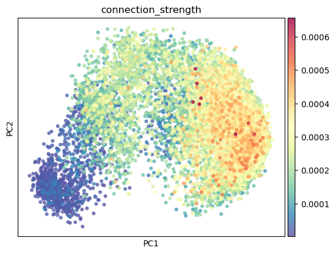
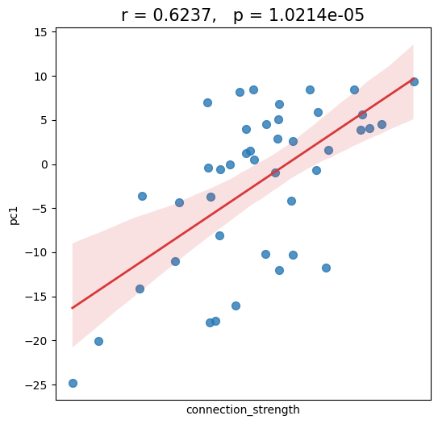
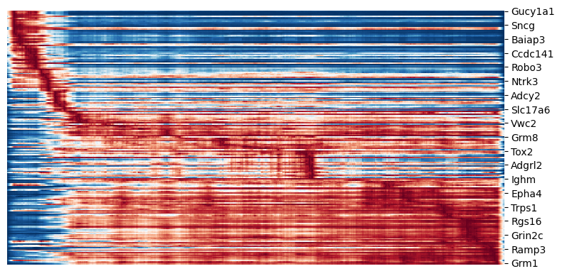
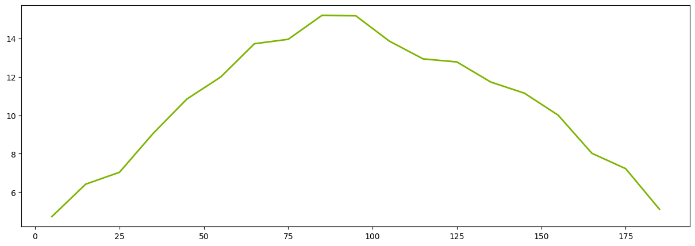
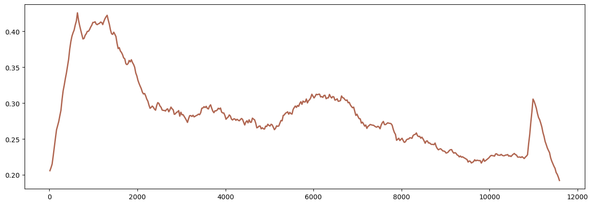

2_ctx_th_connection_and_th_gene_pc1
[1]:
import numpy as np
import matplotlib.pyplot as plt
import pandas as pd
import scanpy as sc
import seaborn as sns
from scipy.stats import pearsonr
import warnings
import matplotlib as mpl
mpl.rcParams['pdf.fonttype'] = 42
mpl.rcParams['ps.fonttype'] = 42
warnings.filterwarnings('ignore')
th_regions = ['AD', 'AMd', 'AMv', 'AV', 'CL', 'CM', 'IAD', 'IAM', 'IGL', 'IMD', 'LD', 'LGv', 'LH', 'LP', 'MD', 'MGd', 'MGm', 'MGv', 'MH', 'PCN', 'PF', 'PIL', 'PO', 'POL',
'PP', 'PR', 'PT', 'PVT', 'PoT', 'RE', 'RH', 'RT', 'SGN', 'SMT', 'SPA', 'SPFm', 'SPFp', 'VAL', 'VM', 'VPL', 'VPLpc', 'VPM', 'VPMpc', 'Xi']
ctx_regions = ['ACAd', 'ACAv', 'AId', 'AIp', 'AIv', 'AUDd', 'AUDp', 'AUDpo',
'AUDv', 'ECT', 'FRP', 'GU', 'ILA', 'MOp', 'MOs', 'ORBl', 'ORBm',
'ORBvl', 'PERI', 'PL', 'RSPagl', 'RSPd', 'RSPv', 'SSp-bfd',
'SSp-ll', 'SSp-m', 'SSp-n', 'SSp-tr', 'SSp-ul', 'SSp-un', 'SSs',
'TEa', 'VISC', 'VISa', 'VISal', 'VISam', 'VISl', 'VISli', 'VISp',
'VISpl', 'VISpm', 'VISpor', 'VISrl']
[2]:
adata_sc = sc.read_h5ad('/mnt/Data16Tc/home/haichao/code/SpaCon/Data/N_20231213_zxw/mouse_3/adata_processed.h5ad')
allen_region = pd.read_csv('/mnt/Data16Tc/home/haichao/code/SpaCon/Data/N_20231213_zxw/mouse_3/allen_region.csv')
adata_sc.obs['region'] = allen_region['region'].values
# add cell type
meta = pd.read_csv('/mnt/Data16Tc/home/haichao/code/SpaCon/Data/N_20231213_zxw/mouse_3/cell_metadata_with_cluster_annotation.csv')
meta = meta.set_index('cell_label')
meta = meta.loc[adata_sc.obs.index.to_list()]
adata_sc.obs['cell_type'] = meta['class'].to_list()
adata_sc.obs['cell_subtype'] = meta['subclass'].to_list()
adata_sc.obs
[2]:
| brain_section_label | x | y | z | x_ccf | y_ccf | z_ccf | region | cell_type | cell_subtype | |
|---|---|---|---|---|---|---|---|---|---|---|
| cell_label | ||||||||||
| 198904341065180396762707397604803217407 | Zhuang-ABCA-3.023 | 49.206853 | 44.877634 | 12.168155 | 4.920685 | 4.487763 | 1.216815 | SSs1 | 33 Vascular | 333 Endo NN |
| 252199681526991424029643077826220097990 | Zhuang-ABCA-3.023 | 48.973992 | 44.813761 | 12.179006 | 4.897399 | 4.481376 | 1.217901 | SSs1 | 33 Vascular | 333 Endo NN |
| 277720971126854564514249564750701518375 | Zhuang-ABCA-3.023 | 48.791066 | 44.577722 | 12.192707 | 4.879107 | 4.457772 | 1.219271 | SSs1 | 33 Vascular | 330 VLMC NN |
| 31551867344111790264292067056219852271 | Zhuang-ABCA-3.023 | 48.830489 | 44.426120 | 12.195078 | 4.883049 | 4.442612 | 1.219508 | SSs1 | 33 Vascular | 329 ABC NN |
| 131102494428104399865219008178262036485 | Zhuang-ABCA-3.023 | 48.308843 | 43.028156 | 12.267879 | 4.830884 | 4.302816 | 1.226788 | SSs1 | 34 Immune | 334 Microglia NN |
| ... | ... | ... | ... | ... | ... | ... | ... | ... | ... | ... |
| 318102106429791409781741726367984532777 | Zhuang-ABCA-3.009 | 131.090716 | 69.334275 | 41.436743 | 13.109072 | 6.933427 | 4.143674 | MDRNd | 30 Astro-Epen | 318 Astro-NT NN |
| 35262847161560382172299767067854387528 | Zhuang-ABCA-3.009 | 131.216032 | 69.494070 | 41.351034 | 13.121603 | 6.949407 | 4.135103 | MDRNd | 33 Vascular | 333 Endo NN |
| 75415866509570969932943497000463821106 | Zhuang-ABCA-3.009 | 131.415152 | 70.764504 | 40.800403 | 13.141515 | 7.076450 | 4.080040 | sctd | 24 MY Glut | 257 SPVC Ccdc172 Glut |
| 12350978322417280063239916106423065862 | Zhuang-ABCA-3.009 | 131.646167 | 71.182557 | 40.595995 | 13.164617 | 7.118256 | 4.059599 | sctd | 24 MY Glut | 245 SPVI-SPVC Tlx3 Ebf3 Glut |
| 327554758863546024460748891922509519354 | Zhuang-ABCA-3.009 | 131.658892 | 71.414675 | 40.501356 | 13.165889 | 7.141468 | 4.050136 | sctd | 24 MY Glut | 245 SPVI-SPVC Tlx3 Ebf3 Glut |
1566842 rows × 10 columns
[3]:
adata_sc_sel = adata_sc[adata_sc.obs['region'].isin(th_regions)]
# celltype
adata_sc_sel = adata_sc_sel[adata_sc_sel.obs['cell_type'].str.contains('Glut')] #glut:11632, GABA:2144
# adata_sc_sel = adata_sc_sel[~((adata_sc_sel.obs['cell_type'].str.contains('Glut')) | (adata_sc_sel.obs['cell_type'].str.contains('GABA')))]
sc.pp.normalize_total(adata_sc_sel, target_sum=1e4)
sc.pp.log1p(adata_sc_sel)
adata_sc_sel.obs
[3]:
| brain_section_label | x | y | z | x_ccf | y_ccf | z_ccf | region | cell_type | cell_subtype | |
|---|---|---|---|---|---|---|---|---|---|---|
| cell_label | ||||||||||
| 161688747436026654650176510540392211433 | Zhuang-ABCA-3.010 | 87.458311 | 42.561713 | 36.003462 | 8.745831 | 4.256171 | 3.600346 | PP | 19 MB Glut | 168 SPA-SPFm-SPFp-POL-PIL-PoT Sp9 Glut |
| 58181776695022611014193138668092143421 | Zhuang-ABCA-3.010 | 87.428665 | 43.141638 | 36.074035 | 8.742867 | 4.314164 | 3.607403 | PP | 19 MB Glut | 168 SPA-SPFm-SPFp-POL-PIL-PoT Sp9 Glut |
| 44943142248653779447832011085753663887 | Zhuang-ABCA-3.010 | 88.399417 | 38.509451 | 35.499828 | 8.839942 | 3.850945 | 3.549983 | PIL | 19 MB Glut | 168 SPA-SPFm-SPFp-POL-PIL-PoT Sp9 Glut |
| 116752430110288879397639873888117102751 | Zhuang-ABCA-3.010 | 88.055718 | 34.977674 | 35.215769 | 8.805572 | 3.497767 | 3.521577 | SGN | 19 MB Glut | 168 SPA-SPFm-SPFp-POL-PIL-PoT Sp9 Glut |
| 90801153563202361546995315846250718208 | Zhuang-ABCA-3.010 | 88.419023 | 34.479228 | 35.184868 | 8.841902 | 3.447923 | 3.518487 | SGN | 19 MB Glut | 168 SPA-SPFm-SPFp-POL-PIL-PoT Sp9 Glut |
| ... | ... | ... | ... | ... | ... | ... | ... | ... | ... | ... |
| 137125155786416424728071422508382942054 | Zhuang-ABCA-3.009 | 86.480430 | 34.094203 | 37.248728 | 8.648043 | 3.409420 | 3.724873 | SGN | 19 MB Glut | 168 SPA-SPFm-SPFp-POL-PIL-PoT Sp9 Glut |
| 186321231466624970722021094909324401885 | Zhuang-ABCA-3.009 | 86.443977 | 35.015822 | 37.291043 | 8.644398 | 3.501582 | 3.729104 | POL | 19 MB Glut | 168 SPA-SPFm-SPFp-POL-PIL-PoT Sp9 Glut |
| 262284519603134366801326445274337827961 | Zhuang-ABCA-3.009 | 86.388989 | 32.866518 | 37.212756 | 8.638899 | 3.286652 | 3.721276 | SGN | 19 MB Glut | 168 SPA-SPFm-SPFp-POL-PIL-PoT Sp9 Glut |
| 33608739852097367198466784523454261485 | Zhuang-ABCA-3.009 | 86.904204 | 34.752896 | 37.268567 | 8.690420 | 3.475290 | 3.726857 | POL | 19 MB Glut | 168 SPA-SPFm-SPFp-POL-PIL-PoT Sp9 Glut |
| 303385550649730012456703013017610179856 | Zhuang-ABCA-3.009 | 88.389510 | 37.024369 | 37.400811 | 8.838951 | 3.702437 | 3.740081 | POL | 19 MB Glut | 168 SPA-SPFm-SPFp-POL-PIL-PoT Sp9 Glut |
11632 rows × 10 columns
[4]:
sc.tl.pca(adata_sc_sel)
adata_sc_sel.obs['pc1'] = adata_sc_sel.obsm['X_pca'][:, 0]
[5]:
ctx2th_connection_strength = pd.read_csv('../data/ctx2th_connection_strength_for_th_single_cell.csv')
adata_sc_sel.obs['connection_strength'] = ctx2th_connection_strength['connection_strength'].values
adata_sc_sel.obs
[5]:
| brain_section_label | x | y | z | x_ccf | y_ccf | z_ccf | region | cell_type | cell_subtype | pc1 | connection_strength | |
|---|---|---|---|---|---|---|---|---|---|---|---|---|
| cell_label | ||||||||||||
| 161688747436026654650176510540392211433 | Zhuang-ABCA-3.010 | 87.458311 | 42.561713 | 36.003462 | 8.745831 | 4.256171 | 3.600346 | PP | 19 MB Glut | 168 SPA-SPFm-SPFp-POL-PIL-PoT Sp9 Glut | -18.752752 | 0.000148 |
| 58181776695022611014193138668092143421 | Zhuang-ABCA-3.010 | 87.428665 | 43.141638 | 36.074035 | 8.742867 | 4.314164 | 3.607403 | PP | 19 MB Glut | 168 SPA-SPFm-SPFp-POL-PIL-PoT Sp9 Glut | -17.124094 | 0.000148 |
| 44943142248653779447832011085753663887 | Zhuang-ABCA-3.010 | 88.399417 | 38.509451 | 35.499828 | 8.839942 | 3.850945 | 3.549983 | PIL | 19 MB Glut | 168 SPA-SPFm-SPFp-POL-PIL-PoT Sp9 Glut | -13.156902 | 0.000147 |
| 116752430110288879397639873888117102751 | Zhuang-ABCA-3.010 | 88.055718 | 34.977674 | 35.215769 | 8.805572 | 3.497767 | 3.521577 | SGN | 19 MB Glut | 168 SPA-SPFm-SPFp-POL-PIL-PoT Sp9 Glut | -15.346298 | 0.000100 |
| 90801153563202361546995315846250718208 | Zhuang-ABCA-3.010 | 88.419023 | 34.479228 | 35.184868 | 8.841902 | 3.447923 | 3.518487 | SGN | 19 MB Glut | 168 SPA-SPFm-SPFp-POL-PIL-PoT Sp9 Glut | -16.317265 | 0.000118 |
| ... | ... | ... | ... | ... | ... | ... | ... | ... | ... | ... | ... | ... |
| 137125155786416424728071422508382942054 | Zhuang-ABCA-3.009 | 86.480430 | 34.094203 | 37.248728 | 8.648043 | 3.409420 | 3.724873 | SGN | 19 MB Glut | 168 SPA-SPFm-SPFp-POL-PIL-PoT Sp9 Glut | -15.591858 | 0.000108 |
| 186321231466624970722021094909324401885 | Zhuang-ABCA-3.009 | 86.443977 | 35.015822 | 37.291043 | 8.644398 | 3.501582 | 3.729104 | POL | 19 MB Glut | 168 SPA-SPFm-SPFp-POL-PIL-PoT Sp9 Glut | -19.282854 | 0.000072 |
| 262284519603134366801326445274337827961 | Zhuang-ABCA-3.009 | 86.388989 | 32.866518 | 37.212756 | 8.638899 | 3.286652 | 3.721276 | SGN | 19 MB Glut | 168 SPA-SPFm-SPFp-POL-PIL-PoT Sp9 Glut | -14.546726 | 0.000133 |
| 33608739852097367198466784523454261485 | Zhuang-ABCA-3.009 | 86.904204 | 34.752896 | 37.268567 | 8.690420 | 3.475290 | 3.726857 | POL | 19 MB Glut | 168 SPA-SPFm-SPFp-POL-PIL-PoT Sp9 Glut | -17.966299 | 0.000075 |
| 303385550649730012456703013017610179856 | Zhuang-ABCA-3.009 | 88.389510 | 37.024369 | 37.400811 | 8.838951 | 3.702437 | 3.740081 | POL | 19 MB Glut | 168 SPA-SPFm-SPFp-POL-PIL-PoT Sp9 Glut | -17.602646 | 0.000142 |
11632 rows × 12 columns
scanpy
[6]:
sc.pl.embedding(
adata_sc_sel,
basis="pca",
color=["connection_strength"],
color_map="Spectral_r",
size=80,
alpha=0.8
)

[7]:
region_counts = adata_sc_sel.obs['region'].value_counts()
valid_labels = region_counts[region_counts >= 5].index
# 过滤原始 DataFrame
adata_sc_sel = adata_sc_sel[adata_sc_sel.obs['region'].isin(valid_labels)]
adata_sc_sel.obs['region'].astype(str)
adata_sc_sel
[7]:
View of AnnData object with n_obs × n_vars = 11632 × 1122
obs: 'brain_section_label', 'x', 'y', 'z', 'x_ccf', 'y_ccf', 'z_ccf', 'region', 'cell_type', 'cell_subtype', 'pc1', 'connection_strength'
uns: 'log1p', 'pca'
obsm: 'X_pca'
varm: 'PCs'
[8]:
x = 'connection_strength'
y = 'pc1'
df = pd.DataFrame({x: adata_sc_sel.obs.groupby('region')[x].mean(),
y: adata_sc_sel.obs.groupby('region')[y].mean()})
plt.figure(figsize=(6,6))
ax = sns.regplot(data=df, x=x, y=y, scatter=True,
scatter_kws={'s': 50, 'color': '#2878B5', 'alpha': 0.8, 'marker': 'o'},
line_kws={'linewidth': 2, 'color': '#D8383A', 'linestyle': '-'})
corr, p = pearsonr(df[x], df[y])
plt.xticks([])
plt.title(f'r = {corr:.4}, p = {p:.5}', fontsize=15)
[8]:
Text(0.5, 1.0, 'r = 0.6237, p = 1.0214e-05')

gene fit
[9]:
import scvelo as scv
adata_sc_sel.layers["spliced"] = adata_sc_sel.X
adata_sc_sel.layers["unspliced"] = adata_sc_sel.X
scv.tl.recover_dynamics(adata_sc_sel, n_jobs=100)
scv.tl.velocity(adata_sc_sel, mode="dynamical")
scv.tl.velocity_graph(adata_sc_sel, n_jobs=100)
recovering dynamics (using 100/192 cores)
WARNING: Unable to create progress bar. Consider installing `tqdm` as `pip install tqdm` and `ipywidgets` as `pip install ipywidgets`,
or disable the progress bar using `show_progress_bar=False`.
finished (0:01:26) --> added
'fit_pars', fitted parameters for splicing dynamics (adata.var)
computing neighbors
/mnt/Data16Tc/home/haichao/anaconda3/envs/SpaCon_test1/lib/python3.10/site-packages/pandas/core/algorithms.py:522: DeprecationWarning: np.find_common_type is deprecated. Please use `np.result_type` or `np.promote_types`.
See https://numpy.org/devdocs/release/1.25.0-notes.html and the docs for more information. (Deprecated NumPy 1.25)
common = np.find_common_type([values.dtype, comps_array.dtype], [])
finished (0:00:25) --> added
'distances' and 'connectivities', weighted adjacency matrices (adata.obsp)
computing moments based on connectivities
finished (0:00:00) --> added
'Ms' and 'Mu', moments of un/spliced abundances (adata.layers)
computing velocities
finished (0:00:04) --> added
'velocity', velocity vectors for each individual cell (adata.layers)
computing velocity graph (using 100/192 cores)
finished (0:00:06) --> added
'velocity_graph', sparse matrix with cosine correlations (adata.uns)
[10]:
top_genes = adata_sc_sel.var['fit_likelihood'].sort_values(ascending=False).index[:200]
cm = scv.pl.heatmap(adata_sc_sel, var_names=top_genes, sortby='connection_strength', col_color=None, color_map='RdBu_r', n_convolve=300, sort=True, show=False)

[11]:
# 参数设置
group_size = 10
window_size = 10
# 分组计算函数
def group_differences(matrix, group_size):
n_cells = matrix.shape[0]
n_groups = n_cells // group_size
# 初始化组间差异矩阵
diffs = np.zeros(n_groups-1)
for i in range(n_groups-1):
# 提取相邻两组细胞（边界处理：丢弃不能成组的尾部细胞）
group1 = matrix[i*group_size : (i+1)*group_size]
group2 = matrix[(i+1)*group_size : (i+2)*group_size]
# 计算组间差异（使用中位数降低异常值影响）
median_diff = np.median(group2, axis=0) - np.median(group1, axis=0)
diffs[i] = np.linalg.norm(median_diff)
return diffs
# 执行分组差异计算
smoothed_exp = cm.data2d.values
cell_diffs = group_differences(smoothed_exp, group_size)
# 滑动窗口平滑（自动适配组数）
valid_window = min(window_size, len(cell_diffs))
smoothed_diffs = np.convolve(cell_diffs,
np.ones(valid_window)/valid_window,
mode='same') # 保持长度不变
# 可视化设置
plt.figure(figsize=(15, 5))
x_positions = np.arange(len(cell_diffs)) * group_size + group_size/2 # 标注组中心位置
plt.plot(x_positions, smoothed_diffs,
color='#7db400',
linewidth=2,
label=f'Smoothed (window={valid_window})')
[11]:
[<matplotlib.lines.Line2D at 0x7f76babb9e10>]

[12]:
group_size = 25
window_size = 50
# 分组计算函数
def group_differences(matrix, group_size):
n_cells = matrix.shape[0]
n_groups = n_cells // group_size
# 初始化组间差异矩阵
diffs = np.zeros(n_groups-1)
for i in range(n_groups-1):
# 提取相邻两组细胞（边界处理：丢弃不能成组的尾部细胞）
group1 = matrix[i*group_size : (i+1)*group_size]
group2 = matrix[(i+1)*group_size : (i+2)*group_size]
# 计算组间差异（使用中位数降低异常值影响）
median_diff = np.median(group2, axis=0) - np.median(group1, axis=0)
diffs[i] = np.linalg.norm(median_diff)
return diffs
# 执行分组差异计算
smoothed_exp = cm.data2d.values.T
cell_diffs = group_differences(smoothed_exp, group_size)
# 滑动窗口平滑（自动适配组数）
valid_window = min(window_size, len(cell_diffs))
smoothed_diffs = np.convolve(cell_diffs,
np.ones(valid_window)/valid_window,
mode='same') # 保持长度不变
# 可视化设置
plt.figure(figsize=(15, 5))
x_positions = np.arange(len(cell_diffs)) * group_size + group_size/2 # 标注组中心位置
plt.plot(x_positions, smoothed_diffs,
color='#b06651',
linewidth=2,
label=f'Smoothed (window={valid_window})')
[12]:
[<matplotlib.lines.Line2D at 0x7f76ba95d2d0>]

[ ]: